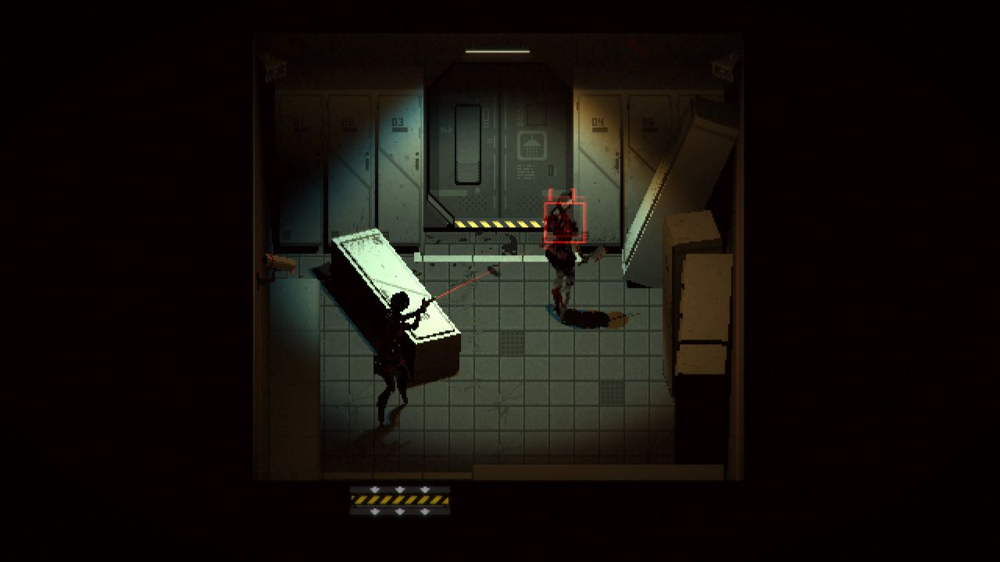
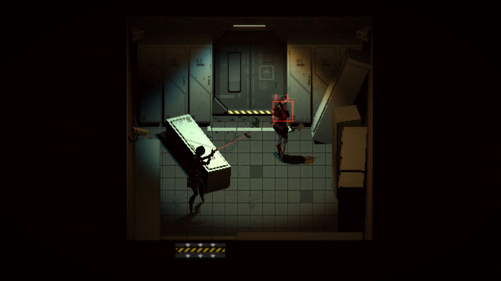
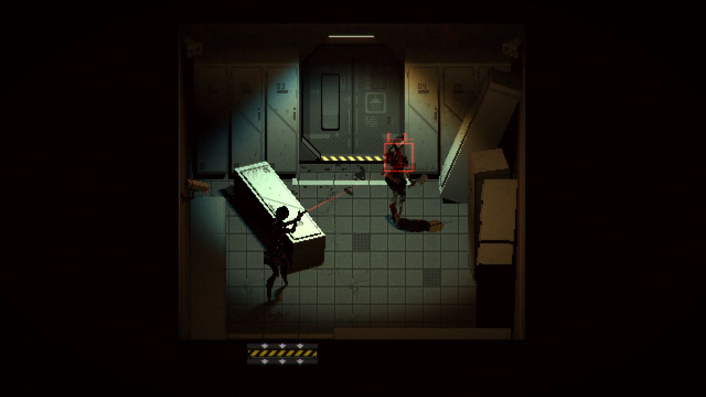

SCREENSHOTS
 



Immersion in a Horror Atmosphere: The game creates a unique sense of anxiety through gloomy locations, unexpected sound design, and visual details that heighten feelings of isolation and inevitable danger.
Innovative Approach to Survival: By combining elements of puzzles and survival, the player must not only fight enemies but also solve puzzles, manage limited resources and make difficult decisions that impact the progression of events.
A Plot Filled with Mysteries and Symbolism: The story skillfully interweaves the character's personal experiences with global mystical events, allowing players to gradually uncover layers of narrative through discovered documents, audio recordings, and enigmatic imagery.

"Signalis is a real breakthrough in the horror genre. The game immerses you in a world of nightmares and mysterious plot twists. The graphics and sound design create a unique sense of fear and tension. A deeper moment could be your last gasp from the very start."
- Horror Hique Weekly"In Signalis, the survival mechanics are remarkably well-developed. Limited resources, challenging puzzles, and the need for strategic thinking make the game stand out. While there is a slight lack of precision, the overall technical execution leaves a positive impression."
- Tech Frontier Gaming"The plot of Signalis captivates with its multi-layered narrative and symbolism. Every discovery and riddle adds new details to the overall picture. The story, conveyed through mysterious documents and magical imagery, offers plenty of room for personal interpretation."
- Narrative News Magazine"Signalis impressed me with its atmosphere and tension. Unexpected plot twists and a constant sense of threat make the game unforgettable. No situation is without challenging mechanics, so hold on to the charm and encourage you to keep exploring for new discoveries."
- Gamer's Edge Daily